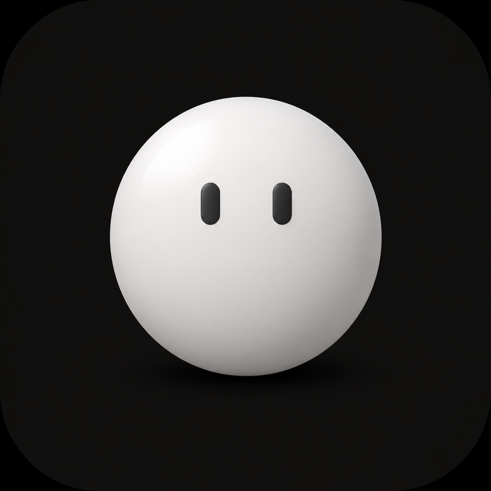

拖动与互动
拖放后转面站稳，根据所在位置朝向桌面内侧，唤醒时绕个小圈。
嗨，今天也碰面啦。
它不会占据你的工作，只在你愿意时回应。
拖放后转面站稳，根据所在位置朝向桌面内侧，唤醒时绕个小圈。
看向同屏鼠标，轻轻摸头时侧躺贴贴，配合简短回应。
弹跳、果冻抖动、扭动、探望、鞠躬与低频旋转。
从 60 × 60 到大号，自由切换并可始终置顶。
站稳啦，继续陪你。
自动轮播，也可以点选你想看的小动作。
可选能力
默认关闭。开启后，在本机读取额度与任务进展；处理中偶尔浮现头顶光迹，完成时用跳跃或渐变彩带回应。
一点点把线索串起来。
0.3.17 Apple 芯片版 · 已发布
不只是待在桌面上。想说点什么，就打开球球旁边的聊天面板；回来时，继续熟悉的那一段。
使用入口：右键球球或菜单栏 → 和球球聊聊
需在本机登录 Codex 并联网，无需另填 API Key；回复使用你的 Codex 额度。普通桌宠仍可离线使用。
下载 0.3.17，和球球聊聊 →
切换记录不会新建对话。
原来的聊天会保留在“聊天记录”里。
那就陪我放松一下吧。
可点击“发送示例”和“聊天记录”体验。这里是预设演示，不连接 Codex、不发送真实消息。
标准配色与色弱友好，一键切换。信息更清楚，球球还是熟悉的样子。
今天想慢一点。
好呀，我陪你按自己的步子走。
聊天文字与背景一起调整配色示意，使用预设数据，不连接 Codex；这里的切换只影响本模块，不改变你的桌宠设置或网页主题。
从这里开启右键球球或菜单栏 → 界面配色 → 色弱友好（高对比）。在“色弱友好外观”选择浅色、深色或跟随系统，立即生效并保存。
信息变清楚，陪伴不变调整额度卡、聊天和气泡；保留球球原来的渐变、轮廓、眼睛与动效，额度边框流光也继续保留。
功能预览 · 已在本机 0.3.23 验证，尚未包含在当前公开的 0.3.17 Apple 安装包中。查看当前公开版本
从安静守候到小小回应，看看它如何陪你度过一天。
不抢走注意力，也一直在你身边。
球球在这儿，稳稳待着。
基于已确认 V5 动效的网页演示；Apple 与 Intel x64 自 0.3.13 起均包含这些互动。
Apple 芯片与 Intel 版本完全分开，请按你的 Mac 芯片选择。
官网无广告、无统计脚本、无 Cookie、无表单。普通桌宠不需要登录。
不读取输入内容、剪贴板或其他窗口，也不会上传个人数据。
鼠标坐标、系统空闲时长和锁屏状态只用于动作与休息判断。
默认关闭，关闭后立即停止读取并清理相关状态。
聊天需联网，内容交由 Codex 处理；本机保留球球聊天编号与最近内容。不会读取其他聊天，也不会运行模型返回的代码或命令。
当前安装包使用临时签名，未经过 Apple 公证。只在确认下载来自本官网时继续。
解压 ZIP，打开里面唯一的 DMG 文件。
把“球球桌宠”拖到“Applications”文件夹。
如被拦截，前往“系统设置 > 隐私与安全性”，选择“仍要打开”。
查看各版本的新功能与改进。
新增 Codex 聊天，关闭重开仍可接着聊；支持切换聊天记录，新聊天需确认，也能用预设动作回应。修复任务监控误跟随球球聊天导致的连接占用，继续保留原聊天与历史内容。
新增左右靠边半身收起，悬停时探出、拖离边缘后恢复，也可暂时隐藏；收起时仍会眨眼呼吸、偶尔说句短话，开启 Codex 额度显示时偶尔弹出剩余额度小胶囊。
同步 Apple 版的侧躺贴贴、放下站稳、唤醒绕圈、内侧朝向与 Codex 思考光迹等 0.3.13 功能；已通过 Rosetta 检查，仍待真实 Intel Mac 验收。
新增侧躺摸头、放下转面、唤醒绕圈与桌面内侧朝向。Codex 处理中偶尔显示头顶光迹，完成时随机跳跃或渐变彩带，并补充日常回应文案。
增加间歇性的 Codex 思考提示，避让眼睛和屏幕边界；思考效果已在 0.3.13 升级为头顶光迹。
补全 Codex 新任务发现，修复任务短暂断线后的完成提醒。提供 Apple 芯片版和独立 Intel x64 构建候选。
提供 Apple 热修复版与 Intel 构建候选的架构分流、直连下载和校验信息。
长气泡自适应高度，修复持续拉高闪烁，增加低打扰的任务专注反馈。
通用 Codex 额度规则、双周期卡片与 Apple 芯片正式包完成验证。